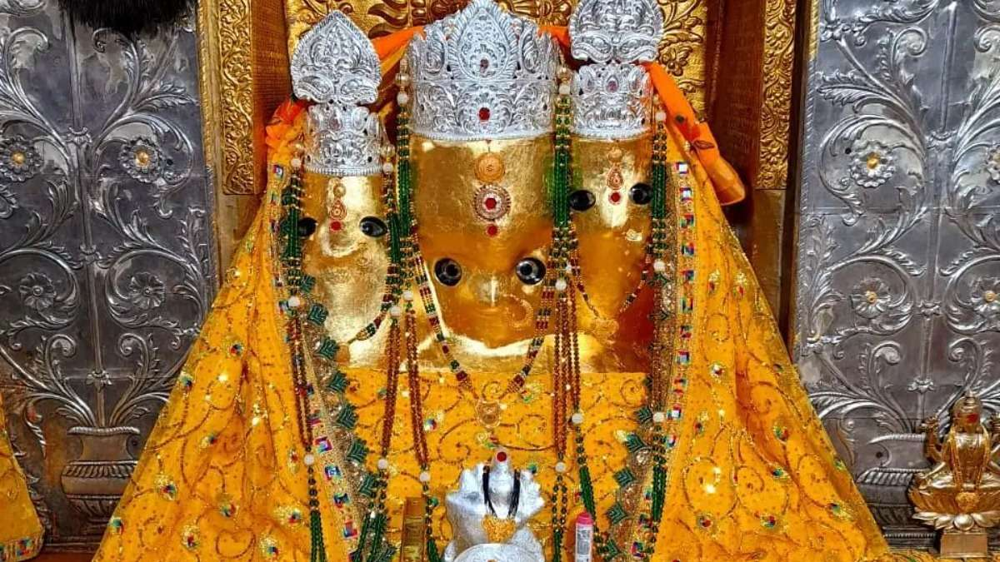
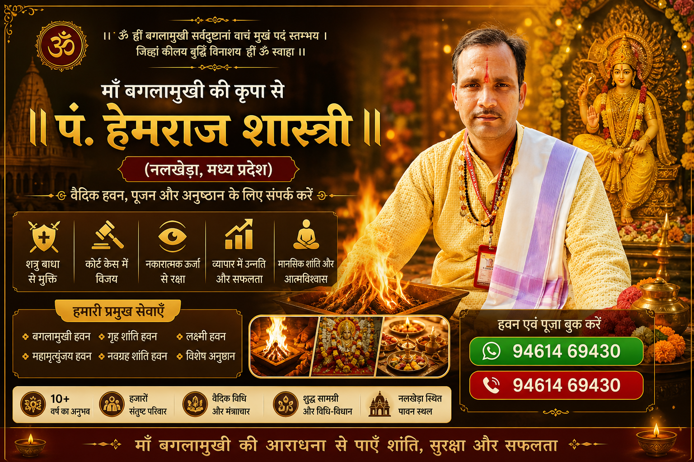
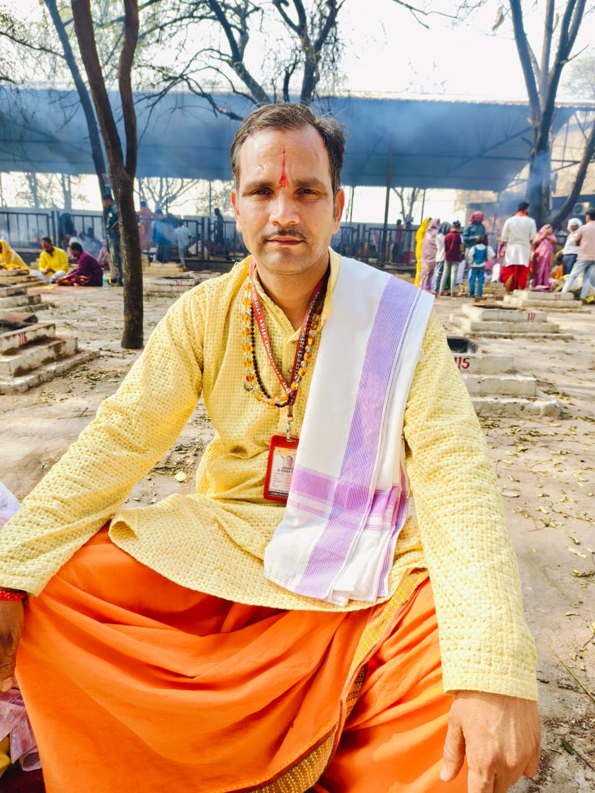

पं. हेमराज शास्त्री
पं. हेमराज शास्त्री
पं. हेमराज शास्त्री
पं. हेमराज शास्त्री



Shatru Nash | Court Case Victory | Protection
नलखेड़ा (मध्यप्रदेश) में स्थित माँ बगलामुखी मंदिर भारत के प्रमुख शक्तिपीठों में से एक माना जाता है।
यहाँ पर बगलामुखी हवन और पूजा करवाना अत्यंत प्रभावशाली माना जाता है, खासकर उन लोगों के लिए जो शत्रु बाधा, कोर्ट केस, व्यापार में नुकसान, या जीवन की अन्य समस्याओं से परेशान हैं।
हमारे यहाँ अनुभवी पंडित जी द्वारा पूर्ण विधि-विधान, शुद्ध मंत्रोच्चार और उचित सामग्री के साथ बगलामुखी हवन करवाया जाता है, जिससे साधक को शीघ्र लाभ प्राप्त होता है।
बगलामुखी हवन का मुख्य उद्देश्य शत्रुओं पर विजय प्राप्त करना, नकारात्मक शक्तियों को समाप्त करना, और जीवन में सफलता तथा सुरक्षा प्राप्त करना होता है।
यदि आप लगातार बाधाओं, मानसिक तनाव, या किसी विशेष समस्या का सामना कर रहे हैं, तो यह हवन आपके लिए एक प्रभावशाली आध्यात्मिक समाधान हो सकता है।
If you are searching for Baglamukhi havan in Nalkheda, our experienced Pandit Ji provides authentic Vedic rituals
with proper mantras and samagri. This havan is especially recommended for enemy removal, court case success, business growth, and protection from negative energies.
We guide you in choosing the right havan based on your problem and ensure that the ritual is performed with complete dedication and spiritual discipline.
Many devotees visit Nalkheda Baglamukhi temple to perform special havan and anushthan for fast results.
Booking a knowledgeable Pandit Ji ensures that the havan is done correctly and gives maximum benefits.
Maa Baglamukhi is one of the ten Mahavidyas, known as the goddess of power, protection, and victory over enemies.
She is worshipped to remove obstacles, win court cases, and eliminate negative energies.
माँ बगलामुखी दस महाविद्याओं में से एक हैं, जिन्हें शत्रु विनाशिनी देवी कहा जाता है।
उनकी पूजा करने से शत्रु बाधा, कोर्ट केस, और नकारात्मक शक्तियों से मुक्ति मिलती है।

Experienced Pandit Ji with 10+ years of Vedic Havan & Puja expertise.
₹350 / 45 min
₹500 / 1.5 hr
₹700 / 2 hr
हमारे यहाँ केवल बगलामुखी हवन ही नहीं, बल्कि अनेक प्रकार के वैदिक हवन और अनुष्ठान विधि-विधान के साथ कराए जाते हैं।
हर हवन का अपना अलग महत्व और लाभ होता है, जो आपकी समस्या और मनोकामना के अनुसार चुना जाता है।
चाहे आपको शांति चाहिए, सफलता प्राप्त करनी हो, शत्रु बाधा से मुक्ति चाहिए या जीवन की रुकावटों को दूर करना हो —
हम आपको सही हवन का चयन करने में मार्गदर्शन देते हैं और पूर्ण विधि से अनुष्ठान करवाते हैं।
⚡ हर व्यक्ति की समस्या अलग होती है — सही हवन का चयन बहुत जरूरी है।
📿 Sabhi Havan ke Bare Me Jane